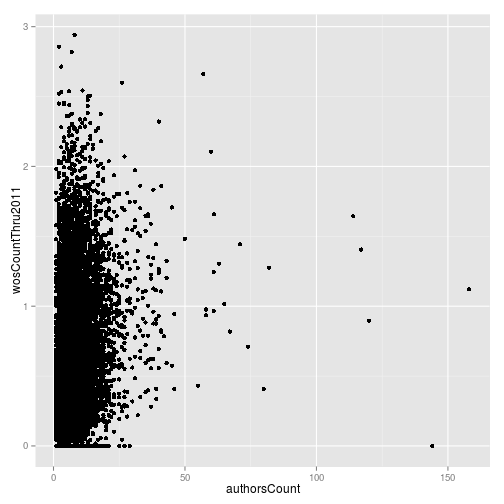
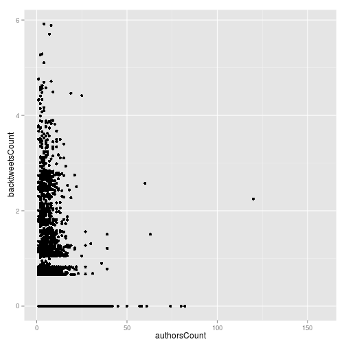
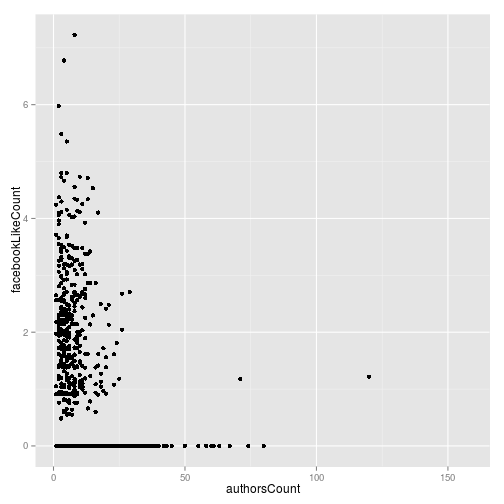
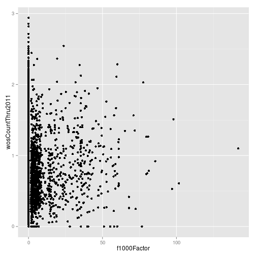
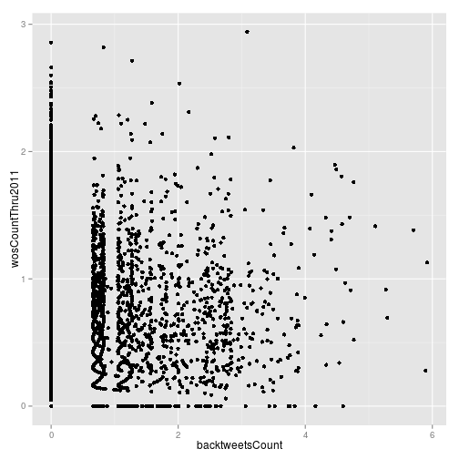
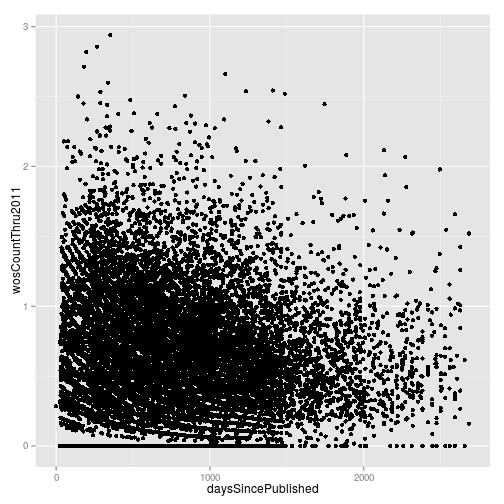
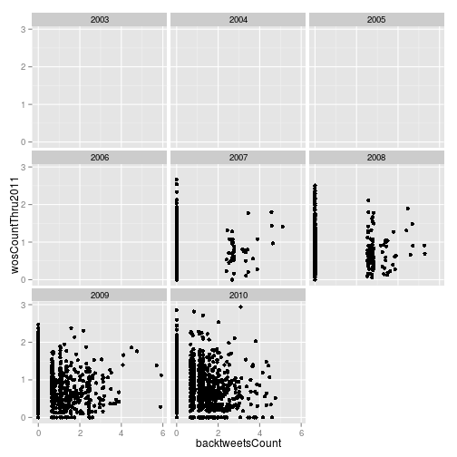

Intermediate programming with R
ggplot2
Learning Objectives
library("dplyr")##
## Attaching package: 'dplyr'
##
## The following objects are masked from 'package:stats':
##
## filter, lag
##
## The following objects are masked from 'package:base':
##
## intersect, setdiff, setequal, unionlibrary("ggplot2")## Loading required package: methodscounts_norm <- read.delim("data/counts-norm.txt.gz", stringsAsFactors = FALSE)Do papers with more authors get more citations?
ggplot(counts_norm, aes(x = authorsCount, y = wosCountThru2011)) +
geom_point()

plot of chunk unnamed-chunk-3
Number of authors by journal.
ggplot(counts_norm, aes(x = journal, y = authorsCount)) +
geom_boxplot()

plot of chunk unnamed-chunk-4
Effect of time on number of citations.
ggplot(counts_norm, aes(x = daysSincePublished, y = wosCountThru2011)) +
geom_point()

plot of chunk unnamed-chunk-5
How do the experts do?
ggplot(counts_norm, aes(x = f1000Factor, y = wosCountThru2011)) +
geom_point()## Warning: Removed 2805 rows containing missing values (geom_point).

plot of chunk unnamed-chunk-6
Compared to the masses?
ggplot(counts_norm, aes(x = backtweetsCount, y = wosCountThru2011)) +
geom_point()## Warning: Removed 6614 rows containing missing values (geom_point).

plot of chunk unnamed-chunk-7
split by journal
ggplot(counts_norm, aes(x = backtweetsCount, y = wosCountThru2011)) +
geom_point() +
facet_wrap(~journal)## Warning: Removed 1325 rows containing missing values (geom_point).## Warning: Removed 1068 rows containing missing values (geom_point).## Warning: Removed 1299 rows containing missing values (geom_point).## Warning: Removed 643 rows containing missing values (geom_point).## Warning: Removed 621 rows containing missing values (geom_point).## Warning: Removed 199 rows containing missing values (geom_point).## Warning: Removed 1459 rows containing missing values (geom_point).

plot of chunk unnamed-chunk-8
split by year
ggplot(counts_norm, aes(x = backtweetsCount, y = wosCountThru2011)) +
geom_point() +
facet_wrap(~year)## Warning: Removed 33 rows containing missing values (geom_point).## Warning: Removed 187 rows containing missing values (geom_point).## Warning: Removed 419 rows containing missing values (geom_point).## Warning: Removed 873 rows containing missing values (geom_point).## Warning: Removed 1011 rows containing missing values (geom_point).## Warning: Removed 1287 rows containing missing values (geom_point).## Warning: Removed 1637 rows containing missing values (geom_point).## Warning: Removed 1167 rows containing missing values (geom_point).

plot of chunk unnamed-chunk-9